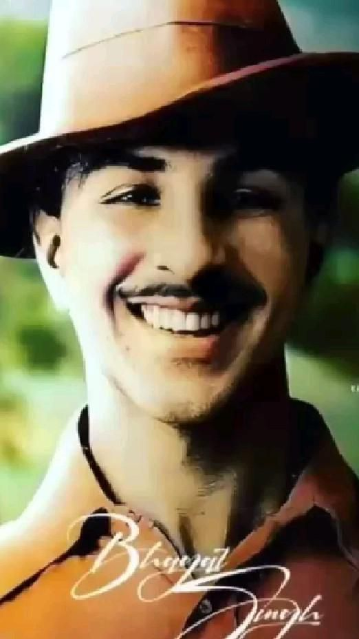

As Bhagat Singh grew older, his parents began thinking about his marriage. In those days, it was common for young boys to marry early and settle into family life. But Bhagat Singh’s dreams were very different from ordinary young men.
Instead of agreeing, he quietly left home and went to Lahore. Before leaving, he wrote a heartfelt letter to his father explaining his decision. In the letter, he said that his life had already been dedicated to the freedom struggle and marriage was not part of his destiny.
This decision shocked his family, but it showed the depth of his commitment. While others dreamed of comfort and family, Bhagat Singh chose sacrifice and revolution. He chose the nation over personal happiness.
The Smile Before the Gallows

On 23 March 1931, Bhagat Singh was only 23 years old when he was sentenced to death. The night before his execution, the prison officers noticed something surprising — he was calmly reading a book in his cell as if nothing had happened.
When the officer came to call him for execution, Bhagat Singh politely asked him to wait for a moment. He wanted to finish the page he was reading. Then he stood up, smiled, and walked confidently toward the gallows without fear.
His final words echoed through the prison walls: “Inquilab Zindabad!” Even in the face of death, he remained fearless. His courage turned him into an immortal hero in the hearts of millions.